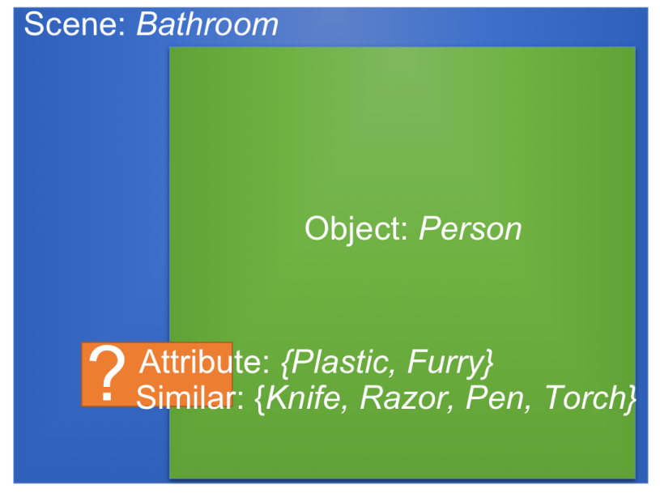
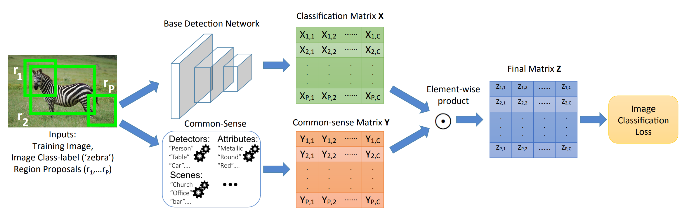
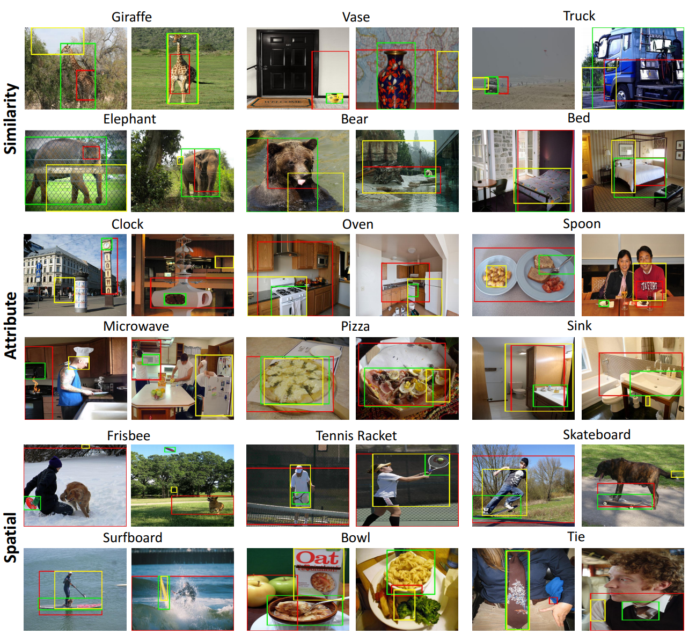
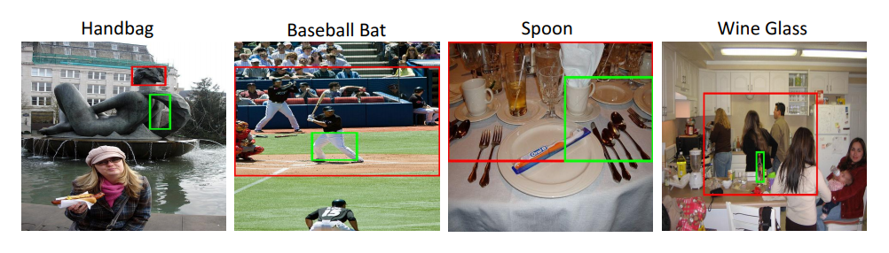

Transferring Common-Sense Knowledge for Object Detection

Using the multiple common-sense cues, can you guess the semantic category of the object corresponding to the orange box? (answer: Toothbrush).
In ECCV 2018
People
Abstract
We propose the idea of transferring common-sense knowledge from source categories to target categories for scalable object detection. In our setting, the training data for the source categories have bounding box annotations, while those for the target categories only have image-level annotations. Current state-of-the-art approaches focus on image-level visual or semantic similarity to adapt a detector trained on the source categories to the new target categories. In contrast, our key idea is to (i) use similarity not at image-level, but rather at region-level, as well as (ii) leverage richer common-sense (based on attribute, spatial, etc.,) to guide the algorithm towards learning the correct detections. We acquire such common-sense cues automatically from readily-available knowledge bases without any extra human effort. On the challenging MS COCO dataset, we find that common-sense knowledge can substantially improves detection performance over existing transfer-learning baselines.
Paper
|
|
Additional Materials
Approach

Proposed framework for transferring common-sense knowledge for object detection. The base detection network computes a classification matrix XP X C without any bounding box annotations. We introduce a common-sense matrix YP X C that modulates the probabilities of region proposals belonging to various classes based on common-sense knowledge. The common-sense matrix is computed using readily-available knowledge base resources.
Interesting Results

Qualitative detection results on MS COCO (Ours: green boxes; Base network: red; LSDA+Semantic: Yellow): Observe that our proposed approach produces better detections than the base network for all three common-sense. While LSDA+Semantic performs equally well as ours on a few classes (e.g., giraffe, tie), in general its performance is lower. For 'giraffe' and 'elephant', by using similarity common-sense (i.e., being similar to other animal categories in Csource), our approach detects the full body extent rather than localizing some discriminative body parts. By using attribute common-sense, e.g., 'clock' being round, 'spoon' being metallic, and 'microwave' being white/black, we get better detections. Spatial common-sense helps remove the co-occurring regions (water for 'surfboard', person for 'frisbee').
Failure Cases

Example failures: Our approach fails when the object-of-interest is hardly-visible ('handbag') or when source objects with similar attribute (metallic) are cluttered together ('spoon'). For 'wine glass', we falsely detect the bottle because during training we provided the common-sense that wine-glass is semantically similar to a bottle.
Acknowledgments
This work is in part supported by ONR N00014-13-1-0720, NSF IIS-1338054, NSF IIS-1748387, NSF IIS-1751206, NSF-1652052, NRI-1637479, ARO YIP W911NF-17-1-0410, Allen Distinguished Investigator Award, Allen Institute for Artificial Intelligence, Microsoft Azure Research Award and the GPUs donated by NVIDIA.
Comments, questions to Krishna Kumar Singh